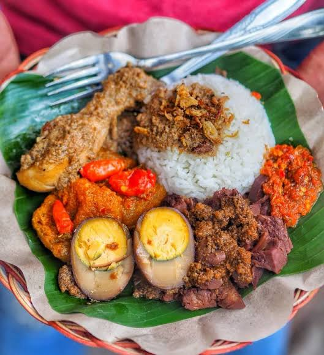

Gudeg

Gudeg is the signature of the royal city of Yogyakarta in Java, Indonesia. Traditionally, Gudeg gains its dark brown color from one exotic ingredient, teak leaves and black tea bag. This dish is served with rice, boiled egg, chicken and crispy, fried beef skin.
Ingredients
- 1 kg boiled young unripe jackfruit
- 200 centimeters coconut milk
- 250 centimeters water
- 4 teabags - black tea
- 6 pieces Indonesian bay leaves / salam leaves
- 50 grams galangal
- 2 lemongrass
- 150 grams gula melaka
- 15 pieces of shallot
- 10 pieces of garlic
- 8 pieces candlenut
- 15 grams coriander seeds
- 15 grams salt
- 4 boiled eggs (duck or chicken - peeled)
- 4 pieces chicken (breast or thigh)
Steps
- In a bowl, grind and mix gula melaka, shallot, garlic,candlenut, and coriander seeds.
- Prepare a saucepan and heat up over medium heat.
- Mix saucepan in water, coconut milk, ground spices,lemongrass and salt. Stir slowly until boiling point, and adjust the seasonings to your personal preference (saltier edge of sweeter).
- Put these ingredients in a sequence into the saucepan:salam leaves, galangal, chicken, jackfruit, base seasoning mixture, teabag, and finally, peeled boiled duck or chicken eggs.
- Close the lid, set the heat to low, and wait patiently.
- Take the teabag out after the first 3-4 hours, then continue the cooking for 5 to 7 more hours.
- Be ready to enjoy!
recipes